▼ 描述图片作文
首段、尾段
通用句型
开头：
In the above picture 在上面的图片中
As is shown in the picture / As shown in the picture 如图所示
As can be seen from the picture 从图中可以看出
As vividly/clearly depicted/portrayed in the picture / drawing/ painting/ cartoon 如图中生动描绘的
The picture above presents a touching/ encouraging / regrettable / thought-provoking scene, where…
上面的图片呈现了一个感人的/鼓舞人心的/令人遗憾的/发人深省的场景，在这个场景中…
结尾：
The word on the ____ reads, “.” 在____上的字写着“”
The caption below the picture reads, “.” 图片下方的标题写着“”
Below the picture, there is a caption which reads:____ 图片下方有一个标题，写着：“____”
真题例子
2007 -个人品质-自信
Part B
- Directions:
describe the drawing briefly,
explain its intended meaning, and then
support your view with an example/examples.
You should write neatly on ANSWER SHEET 2. (20 points)
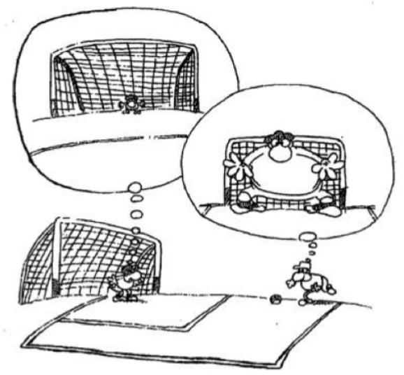
(零) 写作思路
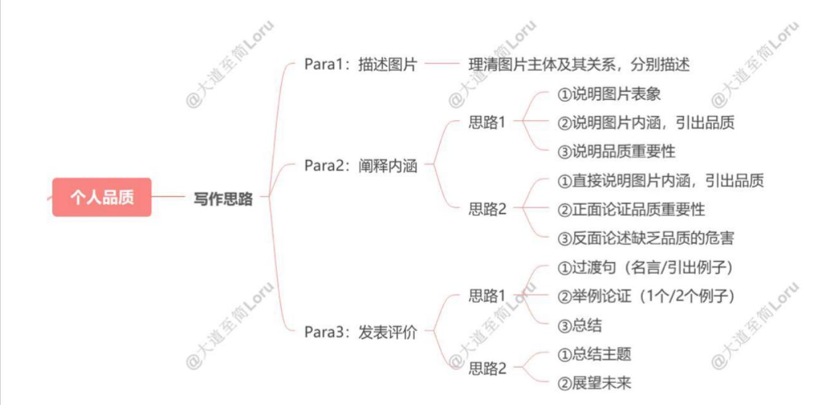
① In summary, self-confidence is the foundation upon which success is built. ② Looking ahead, those who embrace self-confidence will be better prepared to face the uncertainties of the future. ③ By believing in ourselves, we open up endless possibilities and pave the way for a successful and fulfilling life.
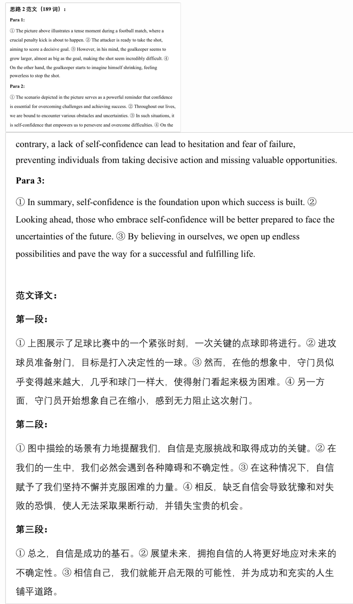
① 上图展示了足球比赛中的一个紧张时刻，一次关键的点球即将进行。② 进攻球员准备射门，目标是打入决定性的一球。③ 然而，在他的想象中，守门员似乎变得越来越大，几乎和球门一样大，使得射门看起来极为困难。④ 另一方面，守门员开始想象自己在缩小，感到无力阻止这次射门。
第二段: ① 图中描绘的场景有力地提醒我们, 自信是克服挑战和取得成功的关键。② 在我们的一生中, 我们必然会遇到各种障碍和不确定性。③ 在这种情况下, 自信赋予了我们坚持不懈并克服困难的力量。④ 相反, 缺乏自信会导致犹豫和对失败的恐惧, 使人无法采取果断行动, 并错失宝贵的机会。
2008 - 个人品质-合作/团结
Part B
You should write neatly on ANSWER SHEET 2. (20 points)
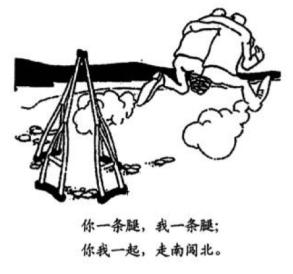
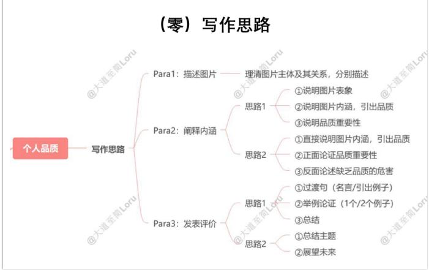
思路1范文（186词）：
Para 1:
①As is shown in the picture, two one-legged men are running quickly on the road, with their legs bound together and their arms supporting each other, leaving their crutches far behind. ②As the caption at the bottom states, they are going to explore the world from north to south.
Para 2:
①Seemingly, the message of the picture is that disabled people can also accomplish miracles when they unite. ②In fact, this picture aims to awaken us to the importance of cooperation, which is an indispensable element on the path to success. ③With
collaboration, we can reach truly amazing heights. ④ Without cooperation, we cannot accomplish much in the increasingly interdependent society we live in today.
Para 3:
①Beyond personal cooperation, large-scale collaborations between nations or organizations are also essential, which promote development and innovation in various fields. ②A prime example is the construction of International Space Station, which was made possible by joint efforts of multiple nations. ③Additionally, in the medical field, global collaboration was key to the rapid development of COVID-19 vaccines, saving millions of lives worldwide. ④In summary, cooperation is the cornerstone upon which all great achievements are built.
范文译文：
第一段：
①正如图片所示，两个独腿的人正在快速奔跑，他们的腿绑在一起，手臂互相扶持，把拐杖远远地抛在了身后。②正如图片底部的标题所写，他们将从北到南探索世界。
第二段：
①看起来，这幅图传达的信息是，残疾人当团结起来时也能创造奇迹。②实际上，这幅图旨在唤醒我们对合作重要性的认识，合作是成功道路上不可或缺的要素。③通过合作，我们可以达到真正惊人的高度。④没有合作，在当今这个日益相互依赖的社会里，我们几乎无法取得太大的成就。
第三段：
①除了个人合作，国家或组织之间的大规模合作也是必不可少的，它促进了各个领域的发展与创新。②一个典型的例子是国际空间站的建设，它是多个国家共同努力的成果。③此外，在医学领域，全球合作是 COVID-19 疫苗快速研发的关键，挽救了全球数百万人的生命。④总之，合作是所有伟大成就的基石。
思路2范文（176词）Para1:①The picture presents a steaming hotpot, containing a variety of cultural ingredients, both Chinese and foreign, ancient and modern, such as Kung Fu, Shakespeare,
postmodernism, and Peking Opera. ②Just as the caption at the bottom states, the integration of different cultures in this “hotpot” is not only enriching but also nourishing.
Para 2:
①The picture illustrates the phenomenon of cultural integration, where diverse cultural elements from different regions and time periods blend together. ②This can be attributed to several factors such as the rapid advancement of globalization and the widespread use of the Internet. ③In addition, cross-cultural communication can bring ample spiritual nourishment for people from different cultures, who can benefit a lot from absorbing different but complementary cultures.
Para 3:
①In recent years, governments have actively promoted international cultural exchanges at various levels, from academic institutions to the national level, to foster mutual understanding and cooperation. ②For example, many countries have established bilateral cultural festivals, such as the China-France Cultural Year, where both nations showcase their cultural heritage through exhibitions, performances, and academic exchanges, deepening the understanding between their peoples.
范文译文：
第一段：
①这幅图展示了一个热气腾腾的火锅，里面包含了各种文化成分，既有中国的，也有外国的，既有古代的，也有现代的，例如功夫、莎士比亚、后现代主义和京剧。②正如图片底部的标题所说，这个“火锅”中不同文化的融合不仅丰富了人们的体验，而且具有滋养作用。
第二段：
①这幅图反映了文化融合的现象，不同地区和不同时期的多种文化元素在其中交融。②这可以归因于几个因素，如全球化的迅速发展和互联网的广泛使用。
③此外，跨文化交流可以为来自不同文化背景的人们带来充足的精神滋养，他们能够通过吸收不同但互补的文化获益良多。
第三段：
①近年来，各国政府积极推动各个层次的国际文化交流，从学术机构到国家层面，旨在促进相互理解与合作。②例如，许多国家建立了双边文化节，如中法文化年，双方通过展览、表演和学术交流展示各自的文化遗产，加深了两国人民之间的理解。
2012 -个人品质
Part B
- Directions: Write an essay of 160-200 words based on the following drawing. In your essay, you should describe the drawing briefly, explain its intended meaning, and give your comments You should write neatly on ANSWER SHEET 2. (20 points)
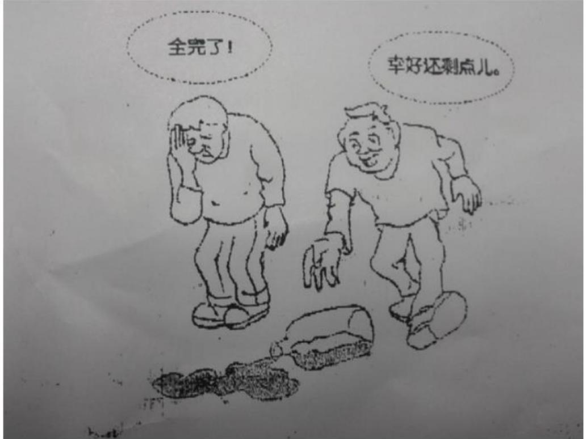
（零）写作思路
Para1: 描述图片 —— 理清图片主体及其关系，分别描述
①说明图片表象
思路1
②说明图片内涵，引出品质
Para2: 阐释内涵
③说明品质重要性
①直接说明图片内涵，引出品质
思路2
②正面论证品质重要性
③反面论述缺乏品质的危害
①过渡句（名言/引出例子）
思路1
②举例论证（1个/2个例子）
Para3: 发表评价
③总结
思路2
①总结主题
②展望未来
Para1: ①As shown in the picture, on the floor lies a bottle, from which a lot of water has spilled, seemingly waiting for someone to pick it up. ②Upon seeing this, two men react very differently. ③One man, with his hand covering his face, desperately sighs, “Everything is gone!”, while the other, thinking of the water still left in the bottle, quickly runs forward and picks the bottle up.
Para2: ①At first glance, the image clearly reveals that people’s attitudes towards the same setback can differ dramatically, with some becoming pessimistic while others remaining optimistic. ②Actually, this picture is intended to remind us of the vital role that a positive attitude plays in helping us overcome challenges and achieve success. ③With a positive mindset, we can overcome even the toughest obstacles; without it, even minor challenges may seem insurmountable.
Para3: ①Numerous examples throughout history can illustrate the transformative power of optimism. ②For instance, Thomas Edison, despite failing thousands of times, maintained his optimism and eventually invented the light bulb. ③Similarly, J.K. Rowling overcame numerous rejections and her optimism eventually led to the worldwide success of the Harry Potter series. ④In the realm of science, Marie Curie’s positive attitude enabled her to persevere through hardships and make groundbreaking discoveries in radioactivity.
范文译文：
第一段：①正如图中所示，地板上躺着一个瓶子，从中洒出了很多水，似乎在等待有人把它捡起来。②看到这一幕，两个人反应截然不同。③其中一个人用手捂住脸，绝望地叹息道：“一切都没了！”，而另一个人想着瓶子里还剩下的水，迅速跑上前去捡起了瓶子。
第二段：①乍一看，这幅图清楚地揭示了人们对待同一挫折的态度可能有着天壤之别，有些人变得悲观，而另一些人则保持乐观。②实际上，这幅图旨在提醒我们，积极态度在我们克服挑战和取得成功中所起的重要作用。③拥有积极的心态，我们可以克服即使是最艰难的障碍；而没有它，甚至微小的挑战也可能显得难以逾越。
第三段：①历史上的许多例子可以说明乐观的变革力量。②例如，托马斯·爱迪生虽然失败了数千次，但他始终保持乐观，最终发明了电灯泡。③同样，J.K.罗琳克服了无数次拒绝，她的乐观态度最终促成了《哈利·波特》系列的全球成功。④在科学领域，玛丽·居里的积极态度使她能够在困难中坚持不懈，做出了放射性领域的突破性发现。
2013 -个人品质（开放）
Part B
- Directions:
Write an essay of 160-200 words based on the following drawing. In your essay, you should
describe the drawing briefly,
interpret its intended meaning, and
give your comments.
You should write neatly on ANSWER SHEET. (20 points)
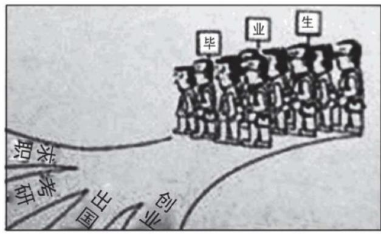
Para1: 描述图片
思路1：正面论述
①概述图片
②过渡句
Para2: 阐释内涵
③应该如何做1，2，3
①表面现象
思路2：表象内涵
②实际涵义
③总结
Para3: 发表评价 —— 让步-转折
思路1范文（229词）：
Para1: ①In the picture above, a group of graduates stand at a crossroads, facing multiple paths, with confused looks on their faces. ②The paths represent four different choices after graduation: pursuing a job, taking the postgraduate entrance exam, going abroad for further education, or starting a business. ③Below the drawing, the caption reads, “Choice-making.”
Para2: ①The situation depicted in the picture reflects the common dilemma confronting college students — which path should they take after graduation. ②This choice is of great significance to our future development and therefore calls for thorough deliberation. ③First and foremost, we need to assess our strengths and weaknesses. ④By understanding our own abilities and limitations, we will be better equipped to choose a career path that suits us and leads to long-term success. ⑤Moreover, remaining open to varied viewpoints can broaden our insight and support wiser decision-making. ⑥Last but not least, we should set clear and achievable goals. ⑦By outlining specific objectives, we can evaluate whether our chosen path is realistic and aligned with our future aspirations.
Para3: ①Undoubtedly, modern graduates are struggling with overwhelming stress stemming from various sources such as fierce competition in the job market, societal standards of success, and the internal pressure to achieve personal goals. ②The proper way to deal with this challenge, however, is not to avoid it, but to stay focused and thoughtfully evaluate all possibilities to make the best decision.
第一段：①在上图中，一群毕业生站在十字路口，面前有多条道路可选，脸上带着困惑的表情。②这些道路代表了毕业后四种不同的选择：就业、考研、出国深造或创业。③图下的标题写着：“选择”。
第二段：①图片中所展现的情景反映了大学生普遍面临的困境——毕业后该走哪条路。②这个选择对我们的未来发展至关重要，因此需要认真思考。③首先，我们需要评估自己的优势和劣势。④通过了解自身的能力和局限性，我们将更有能力选择适合自己的职业道路，并实现长期的成功。⑤此外，保持对不同观点的开放态度可以拓宽我们的视野，并有助于做出更明智的决策。⑥最后，我们应该设立明确且可实现的目标。⑦通过制定具体的目标，我们可以评估所选道路是否现实并符合我们的未来愿景。
第三段：①毫无疑问，现代毕业生正承受着来自各方面的巨大压力，这些压力源于就业市场的激烈竞争、社会对成功的标准以及实现个人目标的内在压力。②然而，正确应对这一挑战的方式不是逃避，而是保持专注，深思熟虑地评估所有可能性，以做出最佳决策。
2014 -个人品质（开放）
Part B
- Directions: Write an essay of 160-200 words based on the following drawing. In your essay, you should describe the drawing briefly, interpret its intended meaning, and give your comments. You should write neatly on the ANSWER SHEET. (20 points)
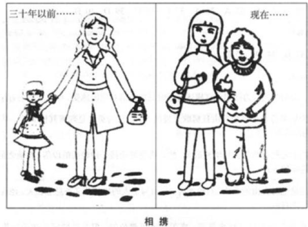
（零）写作思路
Para1: 描述图片
①概述图片
思路1：正面论述
②过渡句
Para2: 阐释内涵
③应该如何做1，2，3
①表面现象
思路2：表象内涵
②实际涵义
③总结
Para3：发表评价 —— 让步-转折
思路1范文（231词）：
Para1: ①The pictures above display two snapshots of a mother and daughter at different stages of their lives. ②In the left picture, taken 30 years ago, a youthful and elegant mother led her daughter hand in hand. ③Meanwhile, the right image vividly captures the grown-up daughter holding her aged mother arm in arm.
Para2: ①The pictures vividly depict the mutual care and deep love within a family. ②As children grow up and parents age, the responsibility for care gradually shifts from parents to children. ③This transformation not only reminds us of the inevitable changes in life but also calls for action—how we, as children, should respond to this shift in roles? ④First and foremost, we should express genuine gratitude to our parents for their lifelong love and support not only through kind words but also through concrete actions. ⑤Additionally, spending quality time with our parents can offer them comfort and companionship. ⑥Last but not least, we should take proactive steps to prepare for this role reversal, ensuring that we are both emotionally and practically equipped to support our parents when the time comes.
Para3: ①Undoubtedly, the shift in family responsibilities can be challenging, especially for adult children. ②However, it is crucial to uphold the value of filial piety, a core value deeply rooted in Chinese culture for centuries, where caring for aging parents is regarded as both a duty and a privilege.
范文翻译：
第一段：①上面的图片展示了母女二人在不同生活阶段的两个快照。②左边的图片拍摄于30年前，显示了一位年轻而优雅的母亲手牵手领着她的女儿。③同时，右边的图片生动地捕捉到了成年女儿臂挽着她年迈的母亲。
第二段：①这些图片生动地展现了家庭中的相互关爱与深厚亲情。②随着孩子的成长和父母的年迈，照顾的责任逐渐从父母转移到子女身上。③这种转变不仅提醒我们生活中不可避免的变化，同时也呼吁我们采取行动——作为子女，我们应如何应对这种角色的转换。④首先，我们应该真诚地感激父母一生的爱与支持，这不仅要通过温暖的话语表达，更要通过实际行动体现。⑤此外，与父母共度有意义的时光能够为他们带来安慰和陪伴。⑥最后但同样重要的是，我们应该积极采取措施，为这种角色转换做好准备，确保在需要时，我们在情感和实际行动上都能为父母提供支持。
第三段：①毫无疑问，家庭责任的转变是一种挑战，尤其是对成年子女。②然而，弘扬孝道至关重要，这是深植于中国文化数百年的核心价值观，赡养老人不仅被视作是一种责任，也是一种荣幸。
2016 - 个人品质（对比）
Part B
52. Directions:
Write an essay of 160-200 words based on the following pictures. In your essay, you should
describe the pictures briefly,
interpret the meaning, and
give your comments.
You should write neatly on the ANSWER SHEET. (20 points)
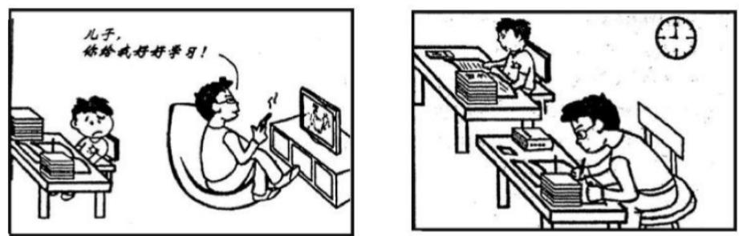
与其只提要求，不如做个榜样
（零）写作思路
- Para1: 描述图片
①概述图片
Para2: 阐释内涵
②说明主体1行为及消极影响
③说明主体2行为及积极影响
Para3：发表评价
总结优秀品质
Para 1: ①The pictures above display two distinct approaches to parenting. ②In the left picture, a father is sitting comfortably in a chair, watching TV while instructing his son to study hard. ③Conversely, the right image vividly captures a father working diligently at his desk alongside his son, setting a good example for him. ④The caption below reads, “Instead of just giving instructions, it is better to set an example.”
Para 2: ①The sharp contrast depicted in the pictures arises from different perceptions of the value of setting a positive example for children. ②The father in the left picture represents those who tend to turn a blind eye to the importance of parental involvement in their child’s learning. ③Such a negative attitude will hinder their child’s personal growth, potentially weakening their motivation and concentration in studies, and even triggering rebellious behavior. ④In clear contrast, the father on the right attaches great importance to being a role model for his child, which not only helps the child cultivate good habits but also enhances the parent-child relationship.
Para 3: ①As the saying goes, parents are the first and best teachers for their children. ②The way parents act has a profound and lifelong impact on their kids. ③Therefore, it is wise for parents to teach by example rather than through verbal instructions.
范文译文：
第一段：①上面的图片展示了两种截然不同的育儿方式。②在左图中，父亲舒适地坐在椅子上看电视，同时要求儿子努力学习。③相反，右图生动地捕捉到了一位父亲与儿子一起在桌前勤奋工作，为他树立了榜样。④图片下方的文字写道：“与其只是发号施令，不如树立榜样。”
第二段：①图片中描绘的鲜明对比源于对树立良好榜样价值的不同看法。②左图中的父亲代表了那些忽视父母参与孩子学习重要性的人。③这种消极态度将会阻碍孩子的个人成长，可能削弱他们的学习动力和专注力，甚至引发叛逆行为。④相比之下，右图中的父亲非常重视为孩子树立榜样，这不仅有助于孩子养成良好的习惯，还能增进亲子关系。
第三段：①正如谚语所说，父母是孩子最早且最好的老师。②父母的行为对孩子有着深远而持久的影响。③因此，父母以身作则，而不是仅通过言语教导，是明智的选择。
2017 - 个人品质-读书
Part B
52. Directions:
Write an essay of 160—200 words based on the following pictures. In your essay, you should 1) describe the pictures briefly,
interpret the meaning, and
give your comments.
You should write neatly on the ANSWER SHEET. (20 points)
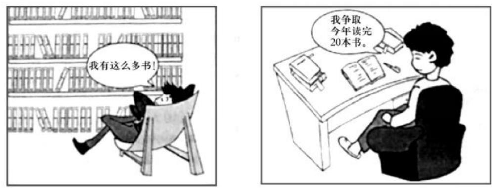
“有书”与“读书”
（零）写作思路
- Para1: 描述图片
①概述图片
Para2: 阐释内涵
②说明主体1行为及消极影响
③说明主体2行为及积极影响
Para3：发表评价
总结优秀品质
2018-个人品质
- Directions: Write an essay of 160-200 words based on the picture below. In your essay, you should 1) describe the picture briefly, 2) interpret the meaning, and 3) give your comments. You should write neatly on the ANSWER SHEET. (20 points)
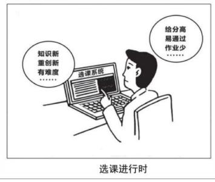
（零）写作思路
1、个人品质（有其他因素）
Para1：描述图片
①概述应该如何做
Para2: 阐释内涵
②让步肯定其他因素
③转折明确观点
④举例论证
Para3：发表评价 —— 总结正确做法
2、个人品质（有对比）
Para1: 描述图片
Para2: 阐释内涵
①概述图片
②说明主体1行为及消极影响
③说明主体2行为及积极影响
Para3：发表评价 —— 总结优秀品质
Para1: ①In the illustration above, a college student is seated at a desk, with an uncertain look on his face, facing two distinct course options. ②The options symbolize two different paths: one is innovative but challenging, while the other is much easier with a lighter workload. ③The caption below the image reads, “Decisions in Course Selection.”
Para2: ①The situation depicted in the picture reflects the common dilemma college students often face when choosing courses. ②Some shortsighted students may be inclined to choose the easier path because it seems more appealing at first. ③In doing so, they may get high grades with minimal effort, but this comes at the cost of the precious opportunities to expand their horizons and enhance their competitiveness. ④On the other hand, some forward-looking students may opt for the more challenging courses, fully aware of the valuable benefits these courses can offer. ⑤They understand that taking on more difficult courses can not only foster personal and academic growth but also equip them with critical skills essential for adapting to the increasingly competitive and rapidly evolving academic and professional landscapes.
Para3: ①In summary, education is not about taking the easy road. ②The most valuable skills and knowledge can only be acquired through diligence, perseverance, and willingness to embrace challenges.
范文翻译：
第一段：①在上图中，一名大学生坐在桌前，面带犹豫，面对两种截然不同的课程选择。②选项象征着两条不同的道路：一条是创新但充满挑战的，而另一条则要轻松得多，工作量也较小。③图片下方的标题写着：“选课进行时”。
第二段：①图片中所描绘的情景反映了学生在选课时常遇到的困境。②一些目光短浅的学生可能倾向于选择更轻松的路径，因为它在一开始看起来更有吸引力。③这样做或许能让他们以最小的努力获得高分，但这也会以错失拓宽视野和提升竞争力的宝贵机会为代价。④另一方面，一些有远见的学生可能会选择更具挑战性的课程，充分意识到这些课程所能带来的宝贵收益。⑤他们明白，选修更难的课程不仅能够促进个人和学术成长，还能让他们掌握在日益竞争激烈且快速变化的学术和职业环境中必不可少的关键技能。
第三段：①总之，教育并不是为了走一条轻松的路。②最宝贵的技能和知识只能通过勤奋、坚持和迎接挑战的勇气来获得。
2019 -个人品质
Part B
- Directions:
Write an essay of 160-200 words based on the picture below. In your essay, you should
describe the picture briefly,
interpret the implied meaning, and
give your comments.
Write your answer on the ANSWER SHEET. (20 points)
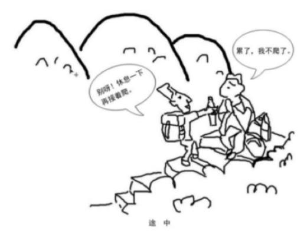
（零）写作思路
Para1：描述图片
理清图片主体及其关系，分别描述
①说明图片表象
思路1
②说明图片内涵，引出品质
Para2: 阐释内涵
③说明品质重要性
①直接说明图片内涵，引出品质
思路2
②正面论证品质重要性
③反面论述缺乏品质的危害
①过渡句（名言/引出例子）
思路1
②举例论证（1个/2个例子）
Para3：发表评价
③总结
①总结主题
思路2
②展望未来
思路1范文（222词）
Para 1: ①As shown in the picture, two climbers are on their way to the top of a mountain. ②One of them, sitting on a stone step with his backpack aside, says in slight frustration, “I’m too tired to go any further.” ③His travel companion, handing him a bottle of water, replies encouragingly, “Come on! Take a break and keep climbing.” ④Below the picture, the caption reads, “on the way.”
Para 2: ①At first glance, the image clearly reveals that people’s attitudes towards challenges can vary significantly, with some individuals giving up easily while others determining to keep going. ②Actually, this picture is intended to remind us of the vital role that perseverance and determination play in overcoming challenges and achieving success. ③With perseverance, we can overcome even the toughest obstacles; without it, even minor challenges may seem insurmountable.
Para 3: ①Countless examples demonstrate the profound impact that perseverance can have in transforming challenges into success. ②A notable example is Zheng Qinwen, a rising star in tennis, whose relatively late entry into international training did not prevent her from making a name for herself in the highly competitive tennis world. ③Her perseverance and determination have enabled her to rise rapidly in the WTA rankings, challenging top players and gaining respect from tennis fans and experts around the globe.
范文译文：
第一段：①正如图中所示，两名登山者正在攀登一座山峰的途中。②其中一个人坐在石阶上，背包放在一旁，略带沮丧地说：“我太累了，走不动了。”③他的旅行伙伴递给他一瓶水，鼓励他说：“加油！休息一下，然后继续爬吧。”④图片下方的标题写着“在路上”。
第二段：①乍一看，这幅图清楚地揭示了人们对待挑战的态度可能有很大差异，有些人很容易放弃，而另一些人则决心继续前行。②实际上，这幅图旨在提醒我们毅力和决心在克服挑战和取得成功中所起的重要作用。③有了毅力，我们可以克服即使是最艰难的障碍；而没有毅力，甚至小小的挑战也可能显得难以逾越。
第三段：①无数例子证明了毅力在将挑战转化为成功方面的深远影响。②一个显著的例子是网球新星郑钦文，她虽然较晚接受国际训练，但这并没有阻止她在竞争激烈的网球世界中打响名声。③她的毅力和决心使她迅速在WTA排名中崛起，挑战顶尖选手，并赢得了全球网球迷和专家的尊重。
2020 -个人品质-自律
Part B
- Directions:
Write an essay of 160-200 words based on the pictures below. In your essay, you should 1) describe the pictures briefly,
interpret the implied meaning, and
give your comments.
Write your answer on the ANSWER SHEET. (20 points)
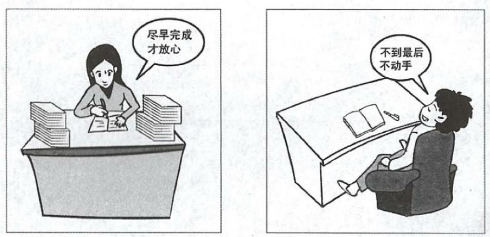
（零）写作思路
Para1: 描述图片
①概述图片
Para2: 阐释内涵
②说明主体1行为及消极影响
③说明主体2行为及积极影响
Para3：发表评价
总结优秀品质
Para1: ①The pictures above display two distinct attitudes towards work. ②In the left picture, a girl is seated at her desk, diligently working through a stack of assignments and reflecting, “I can only feel at ease once I complete my tasks ahead of time.” ③By contrast, the right image vividly captures a boy reclining in his chair, showing no urgency to begin his work and thinking that he won’t start until the last minute.
Para2: ①The sharp distinction depicted in the pictures arises from different perceptions of the value of time management and self-discipline. ②The girl on the left attaches great importance to completing tasks in advance, which not only allows her to manage her time effectively but also ensures both quality and productivity. ③In clear contrast, the individual in the right picture represents those who tend to procrastinate, which will lead them to either rush through their tasks at the last minute or miss deadlines altogether. ④The more they let such a negative attitude take hold, the more easily they let the chance to complete tasks on time slip through their fingers, which is detrimental to their academic performance and career progress in the long run.
Para3: ①In summary, self-discipline is the foundation upon which success is built. ②Therefore, it is essential to cultivate this vital habit within ourselves if we aim to accomplish remarkable goals.
范文翻译：
第一段：①上面的图片展示了两种截然不同的工作态度。②在左边的图片中，一个女孩正坐在她的书桌前，专心致志地处理堆积如山的任务，并且想着：“只有在提前完成任务之后，我才能感到安心。”③相反，右边的图片生动地描绘了一个男孩懒散地靠在椅子上，丝毫没有开始工作的紧迫感，心里想着要到最后一刻才会开始。
第二段：①图片中所展示的鲜明差异源于他们对时间管理和自律价值的不同看法。②左边的女孩非常重视提前完成任务，这不仅让她能有效管理时间，还能保证质量和效率。③与之形成鲜明对比的是，右边的男孩代表了那些倾向于拖延的人，这种态度将导致他们要么在最后一刻匆忙完成任务，要么错过截止日期。④他们越是让这种消极态度占据主导，越容易错失按时完成任务的机会，这在长期内将不利于他们的学业表现和职业发展。
第三段：①总之，自律是成功的基石。②因此，如果我们希望实现非凡的目标，培养这一重要的习惯是至关重要的。